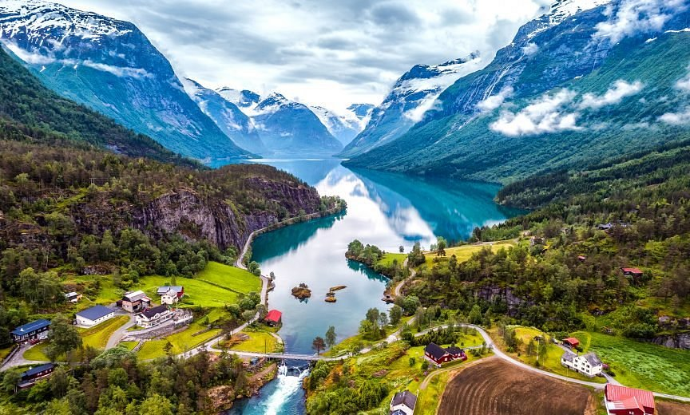

Sou uma pessoa curiosa e gosto muito de aprender coisas novas, principalmente sobre tecnologia. Também gosto de estudar japonês e explorar ideias criativas.
Nome: Ana Clara Araújo Timie Costa
Turma: 2º Ano I - Germinare TECH
Lugares que tenho vontade de conhecer




tenho muita vontade de viajar e conhecer lugares novos, mudar, aprender, conhecer e reaprender. Conhecer outros lugares vai além de ver, é sentir, honrar culturas, se desenvolver e crescer. E por isso escolhi esses lugares, lugares onde aprendo coisas novas, onde sempre costumo evoluir, onde amo estar e amo honrar a cultura que tenho, seja ela do lugar ou não.
O lugar dos meus sonhos
Nome do lugar: Noruega
Por que quero conhecer esse lugar?
É um local com forte ligação com tradições, tanto familiar quanto pessoal, o crescimento interior lá é devasto. Muitos registros antigos indicam que a Hitsoria do local vai muito mais alem do que parece.
Curiosidades sobre esse lugar
- Aurora-Boreal.
- Barreiras espiritas e Ligação com ancestrais.
- A cultura japonesa valoriza muito disciplina, respeito e tradição.
Por que o Scooby?
- foi o que sobrou.
- é muito medroso quando se trata do novo e confuso.
- ama comer.